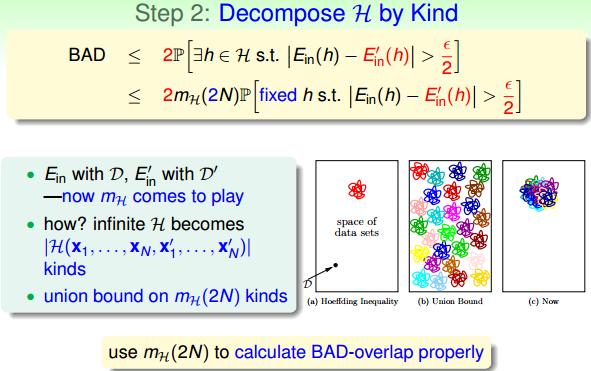

上一節課，我們主要探討了當 M 的數值大小對機器學習的影響。如果 M 很大，那麼就不能保證機器學習有很好的泛化能力，所以問題轉換為驗證 M 有限，即最好是按照多項式成長。然後通過引入了成長函數 和 dichotomy 以及 break point 的概念，提出 2D perceptrons 的成長函數 是多項式級別的猜想。這就是本節課將要深入探討和證明的內容。
# Restriction of Break Point
我們先回顧一下上節課的內容，四種成長函數與 break point 的關係：
下面引入一個例子，如果 k=2，那麼當 N 取不同值的時候，計算其成長函數 是多少。很明顯，當 N=1 時，；當 N=2 時，由 break point 為 2 可知，任意兩點都不能被 shattered（shatter 的意思是對 N 個點，能夠分解為 種 dichotomies）； 最大值只能是 3；當 N=3 時，簡單繪圖分析可得其，即最多只有 4 種 dichotomies。
所以，我們發現當 時，break point 限制了 值的大小，也就是說影響成長函數 的因素主要有兩個：
- 抽樣資料集 N
- break point k（這個變數確定了假設的類型）
那麼，如果給定 N 和 k，能夠證明其 的最大值的上界是多項式的，則根據霍夫丁不等式，就能用 代替 M，得到機器學習是可行的。所以，證明 的上界是 poly (N)，是我們的目標。
# Bounding Function: Basic Cases
求解 B (N,k) 的過程十分巧妙：
- 當 k = 1 時， 恆為 1。
- 當 N < k 時，根據 break point 的定義，很容易得到。
- 當 N = k 時，此時 N 是第一次出現不能被 shatter 的值，所以最多只能有 個 dichotomies，則。
到此，bounding function 的表格已經填了一半了，對於最常見的 N>k 的情況比較複雜，推導過程下一小節再詳細介紹。
# Bounding Function: Inductive Cases
N > k 的情況較為複雜，下面給出推導過程：
以 B (4,3) 為例，首先想著能否構建 B (4,3) 與 B (3,x) 之間的關係。
首先，把 B (4,3) 所有情況寫下來，共有 11 組。也就是說再加一種 dichotomy，任意三點都能被 shattered，11 是極限。
對這 11 種 dichotomy 分組，目前分成兩組，分別是 orange 和 purple，orange 的特點是，x1,x2 和 x3 是一致的，x4 不同並成對，例如 1 和 5，2 和 8 等，purple 則是單一的，x1,x2,x3 都不同，如 6,7,9 三組。
將 Orange 去掉 x4 後去重得到 4 個不同的 vector 並成為，相應的 purple 為。那麼 B (4,3) = ，這個是直接轉化。緊接著，由定義，B (4,3) 是不能允許任意三點 shatter 的，所以由 和 構成的所有三點組合也不能 shatter（alpha 經過去重），即。
另一方面，由於 中 x4 是成對存在的，且 是不能被任意三點 shatter 的，則能推導出 是不能被任意兩點 shatter 的。這是因為，如果 是不能被任意兩點 shatter，而 x4 又是成對存在的，那麼 x1、x2、x3、x4 組成的 必然能被三個點 shatter。這就違背了條件的設定。這個地方的推導非常巧妙，也解釋了為什麼會這樣分組。此處得到的結論是
由此得出 B (4,3) 與 B (3,x) 的關係為：
最後，推導出一般公式為：
根據推導公式，下表給出 B (N,K) 值
根據遞迴公式，推導出 B (N,K) 滿足下列不等式：
上述不等式的右邊是最高階為 k-1 的 N 多項式，也就是說成長函數 的上界 B (N,K) 的上界滿足多項式分佈 poly (N)，這就是我們想要得到的結果。
得到了 的上界 B (N,K) 的上界滿足多項式分佈 poly (N) 後，我們回過頭來看看之前介紹的幾種類型它們的 與 break point 的關係：
我們得到的結論是，對於 2D perceptrons，break point 為 k=4， 的上界是。推廣一下，也就是說，如果能找到一個模型的 break point，且是有限大的，那麼就能推斷出其成長函數 有界。
# A Pictorial Proof
我們已經知道了成長函數的上界是 poly (N) 的，下一步，如果能將 代替 M，代入到 Hoffding 不等式中，就能得到 的結論：
實際上並不是簡單的替換就可以了，正確的運算式為：
該推導的證明比較複雜，我們可以簡單概括為三個步驟來證明：

最終，我們通過引入成長函數，得到了一個新的不等式，稱為 Vapnik-Chervonenkis (VC) bound：
對於 2D perceptrons，它的 break point 是 4，那麼成長函數。所以，我們可以說 2D perceptrons 是可以進行機器學習的，只要找到 hypothesis 能讓，就能保證。
# 總結
本節課我們主要介紹了只要存在 break point，那麼其成長函數 就滿足 poly (N)。推導過程是先引入 的上界 B (N,k)，B (N,k) 的上界是 N 的 k-1 階多項式，從而得到 的上界就是 N 的 k-1 階多項式。然後，我們通過簡單的三步證明，將 代入了 Hoffding 不等式中，推導出了 Vapnik-Chervonenkis (VC) bound，最終證明了只要 break point 存在，那麼機器學習就是可行的。